Х століття
Тризуб Володимира Великого — один з найдавніших відомих символів українських правителів. Використовувався як особиста печатка Великого князя Київського наприкінці X — початку XI століть.
Зображення тризуба знайдено на монетах, цеглинах Десятинної церкви та особистих речах князя.
Дослідники досі сперечаються про значення форми: чи то пікірує сокіл, чи то символ Святої Трійці, чи то стилізований якір.
The trident of Volodymyr the Great is one of the oldest known symbols of Ukrainian rulers. It was used as the personal seal of the Grand Prince of Kyiv in the late 10th and early 11th centuries.
Images of the trident have been found on coins, bricks of the Tithe Church, and the prince's personal belongings.
Researchers still debate the meaning of the shape: a diving falcon, a symbol of the Holy Trinity, or a stylized anchor.
Команда тризуба